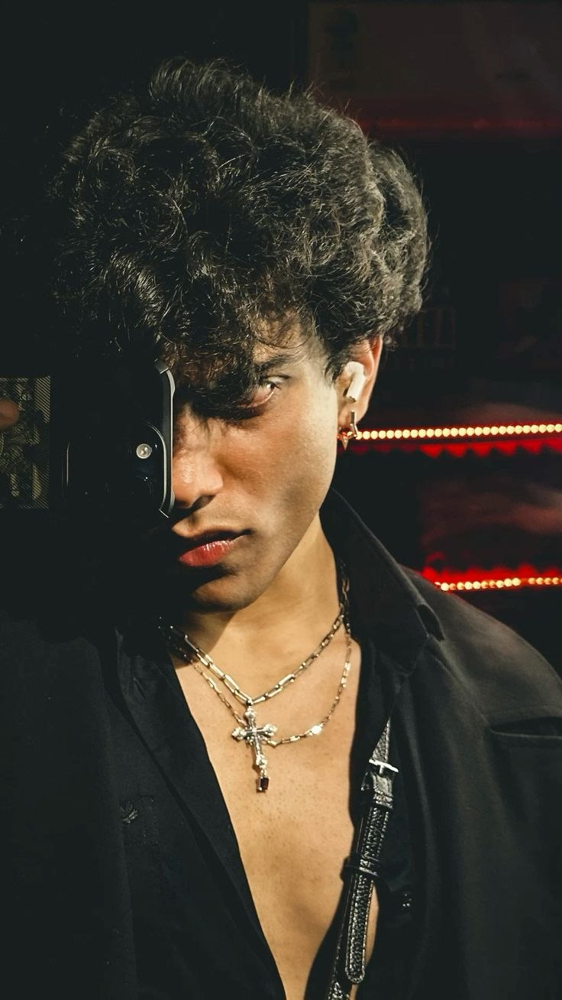

GEEKSKII RECORDS
Founder of an independent music imprint, working across releases, artwork, distribution and audio finishing.
Enter the archive ↗Moving between independent music, fashion, film and visual art. I build, shape and contribute to creative worlds — from running an independent music imprint to working on camera and in post-production.

Pick a direction. Each node opens a different part of my creative practice.
I'm a multidisciplinary creative from Delhi with interests spanning independent music, fashion, film and visual art. My work has moved between building a music imprint, modelling for fashion labels, contributing to music-video visuals and experimenting with tattoo design.
I enjoy the space where aesthetics meet execution: shaping a visual, understanding its context, and learning why it connects with people. I'm currently interested in developing a stronger understanding of marketing principles, brand positioning and consumer behaviour.
Founder of an independent music imprint, working across releases, artwork, distribution and audio finishing.
Enter the archive ↗Freelance modelling and content work with independent and homegrown fashion labels.
View collaborations ↗Working across on-camera roles, visual direction and colour grading for music-video projects.
Explore visual work ↗For creative collaborations, fashion projects, music and conversations around ideas.